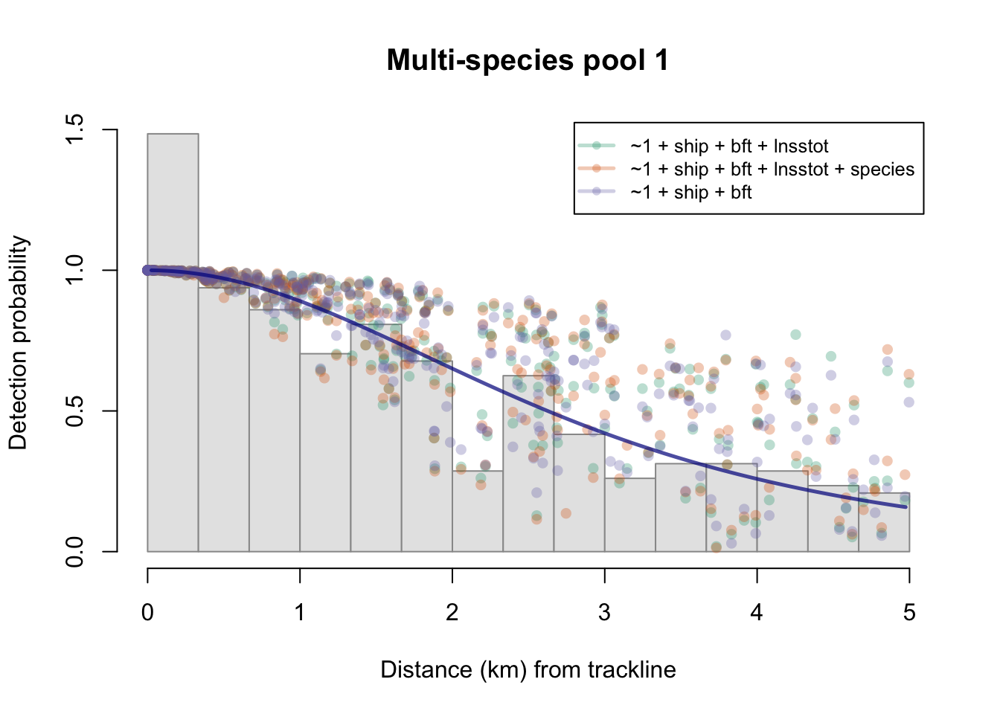
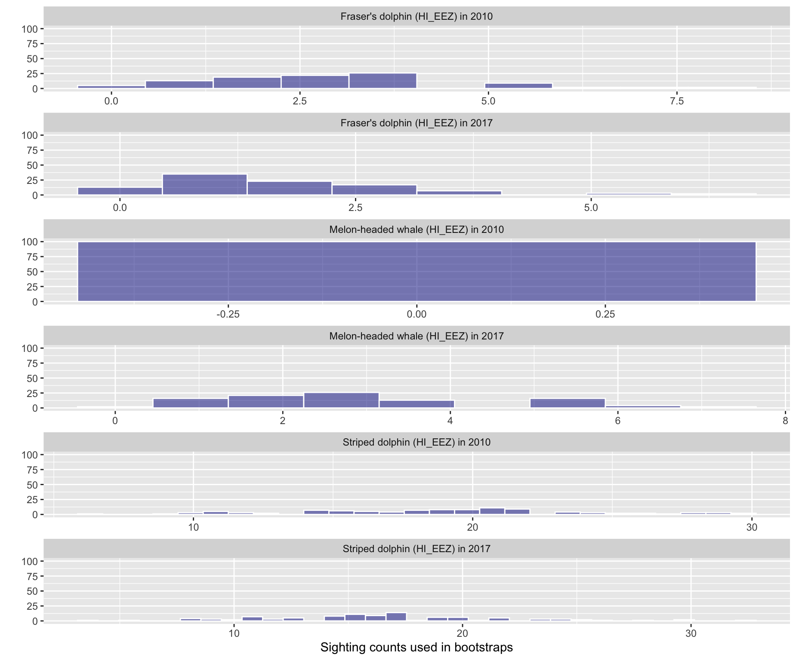
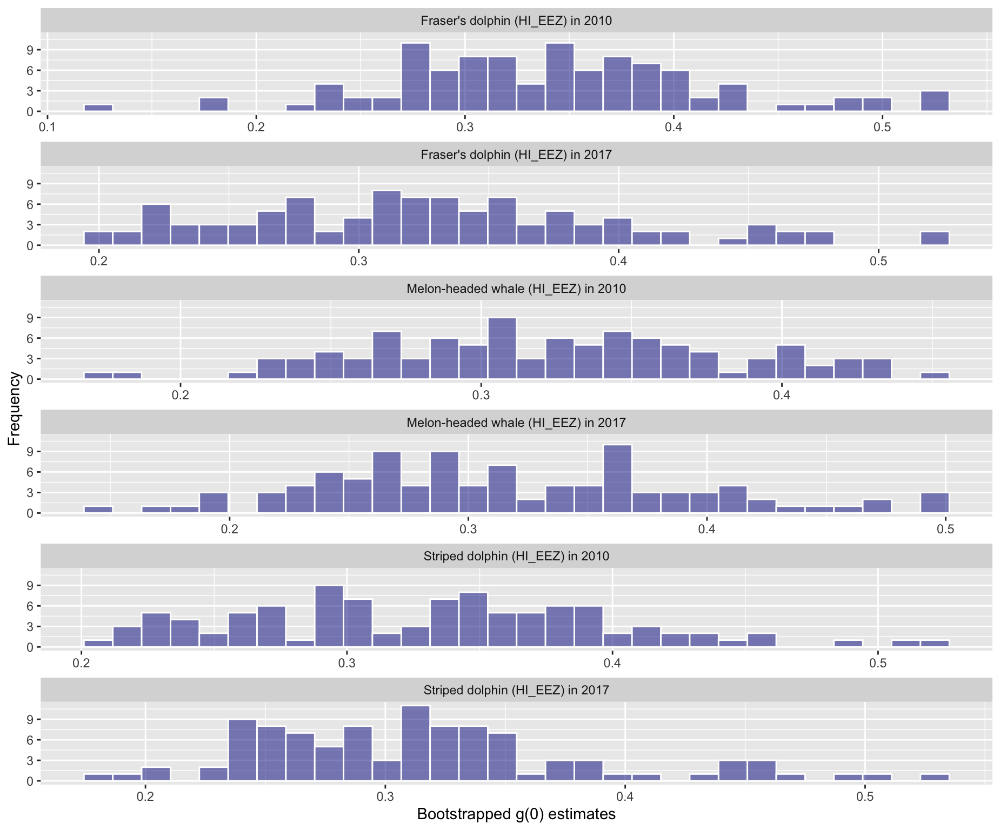
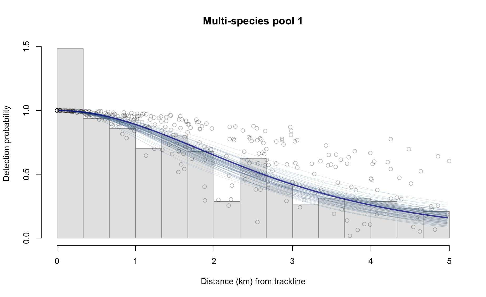
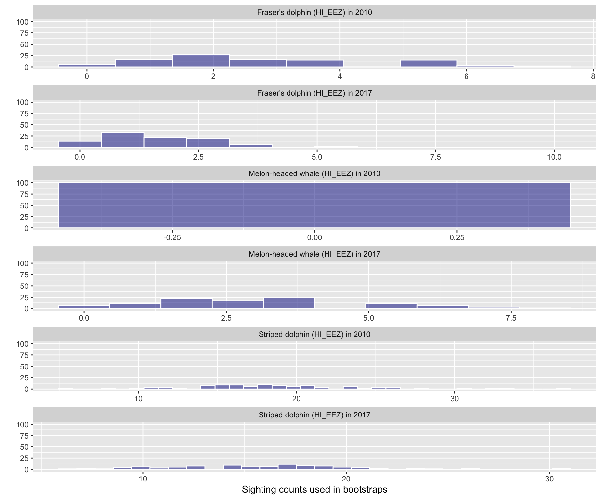
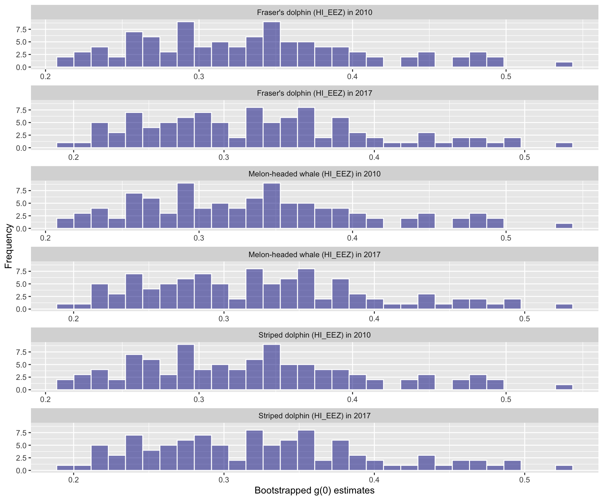

Chapter 12 Diagnostic plots
To demonstrate how LTA results can explored quickly and reviewed for QA/QC using diagnostic plots, we will use a built-in LTabundR dataset, which has density/abundance estimates for the Hawaiian EEZ in 2010 and 2017 for striped dolphins, Fraser’s dolphins, and melon-headed whales, ran with only 100 iterations:
We created these LTA results using the following built-in processed dataset:
The function lta_diagnostics() can be used to review the object returned by the LTabundR function lta(), which is the primary function in this package for line-transect analysis. The typical way to use this function is simply:
When you run this, the function will step through many diagnostic outputs (there are currently 8), some of which are tables and some of which are plots. Between each output, the function will wait for the user to press <Enter>. To turn that waiting feature off, you can add the input wait = FALSE.
To see which outputs are currently available from this function, use the following code:
lta_diagnostics(lta_result,
options = c(),
describe_options = TRUE)
List of options for outputs to provide: ===============
(use numbers in the input `options`)
1 - Point estimate (encounter rate, density, abundance, g(0), etc.)
2 - Summary of bootstrap iterations, including CV of density/abundance
3 - Plot of detection function
4 - Histogram of bootstrapped detection counts
5 - Histogram of bootstrapped g(0) values
6 - Histogram of bootstrapped abundance estimates
7 - Scatterplot of abundance ~ g(0) relationship in boostraps
8 - Time series of point estimate CV as bootstraps accumulate
======================================================To call specific outputs and not others, use the options input. We demonstrate this be stepping through each output below.
Option 1: The point estimate
lta_diagnostics(lta_result, options = 1)
title species Region Area year segments km Area_covered
1 Striped dolphin 013 (HI_EEZ) 2474596 2010 124 17004 60472
2 Striped dolphin 013 (HI_EEZ) 2474596 2017 131 16281 58036
3 Fraser's dolphin 026 (HI_EEZ) 2474596 2010 124 17004 59198
4 Fraser's dolphin 026 (HI_EEZ) 2474596 2017 131 16281 47615
5 Melon-headed whale 031 (HI_EEZ) 2474596 2010 124 17004 NA
6 Melon-headed whale 031 (HI_EEZ) 2474596 2017 131 16281 54317
ESW_mean n g0_est ER_clusters D_clusters N_clusters size_mean size_sd ER
1 3.56 19 0.33 0.0011 0.0005 1202.4 51.4 47.2 0.0574
2 3.56 17 0.32 0.0010 0.0005 1172.1 35.4 18.1 0.0369
3 3.48 3 0.33 0.0002 0.0001 190.9 236.2 129.0 0.0417
4 2.92 2 0.32 0.0001 0.0001 163.4 355.6 91.4 0.0437
5 NA 0 0.33 0.0000 0.0000 0.0 NA NA 0.0000
6 3.34 3 0.32 0.0002 0.0001 214.3 189.2 68.4 0.0349
D N g0_small g0_large g0_cv_small g0_cv_large
1 0.0238 58784 0.33 0.33 0.20 0.20
2 0.0157 38912 0.32 0.32 0.21 0.21
3 0.0186 46047 0.33 0.33 0.20 0.20
4 0.0232 57289 0.32 0.32 0.21 0.21
5 0.0000 0 0.33 0.33 0.20 0.20
6 0.0161 39906 0.32 0.32 0.21 0.21Option 2: Summary of bootstrap iterations
lta_diagnostics(lta_result, options = 2)
title Region year species iterations ESW_mean g0_mean
1 Fraser's dolphin (HI_EEZ) 2010 026 100 3.583041 0.3416702
2 Fraser's dolphin (HI_EEZ) 2017 026 100 3.094781 0.3281904
3 Melon-headed whale (HI_EEZ) 2010 031 100 NaN 0.3231020
4 Melon-headed whale (HI_EEZ) 2017 031 100 3.239299 0.3168325
5 Striped dolphin (HI_EEZ) 2010 013 100 3.565911 0.3311607
6 Striped dolphin (HI_EEZ) 2017 013 100 3.580167 0.3159498
g0_cv km ER D size Nmean Nmedian Nsd
1 0.2221788 17055.42 0.04245259 0.02025920 231.01534 50133.33 44839.58 39680.14
2 0.2242684 16240.37 0.03999801 0.02057141 348.60057 50905.92 43858.56 39747.42
3 0.1836888 17055.42 0.00000000 0.00000000 NaN 0.00 0.00 0.00
4 0.2421172 16240.37 0.03601738 0.01983840 190.01994 49092.02 41762.63 32261.45
5 0.2099688 17055.42 0.05758173 0.02482534 52.52283 61432.68 57097.42 26481.48
6 0.2258010 16240.37 0.03592027 0.01641222 35.43593 40613.61 38207.79 16051.23
CV L95 U95
1 0.7914923 12533.33 200533.31
2 0.7808014 12726.48 203623.70
3 NaN NaN NaN
4 0.6571629 16364.01 147276.07
5 0.4310651 30716.34 122865.35
6 0.3952181 20306.80 81227.22Option 3: Plot of detection function

Option 4: Histogram of bootstrapped detection counts

Option 5: Histogram of bootstrapped g(0) values

Option 6: Histogram of bootstrapped abundance estimates

Option 7: Relationship between bootstrap g(0) and abudance

Option 8: Running calculation of CV during bootstrap process
